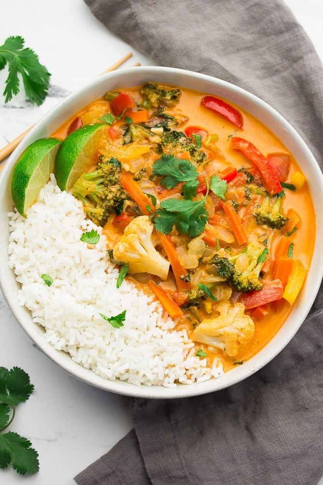

Curry

Vegan Curry
This Vegan Thai Red Curry has the most flavorful, creamy sauce and is totally customizable depending on what vegetables you have on hand. Ready in about 30 minutes.
Ingredients
- olive oil
- yellow onion
- minced garlic
- ginger
- bell pepper
Steps
- Sauté the chopped onion in a large pan for a few minutes.
- Add bell peppers, carrots, broccoli and cauliflower. Cook for 2-3 minutes.
- Now add the curry paste, coconut milk and water. Stir.
- Stir in the kale or spinach. Bring to a boil, then simmer mixture, covered, for 5-10 minutes